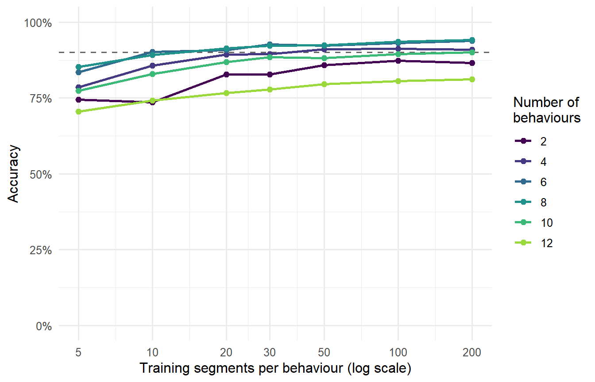
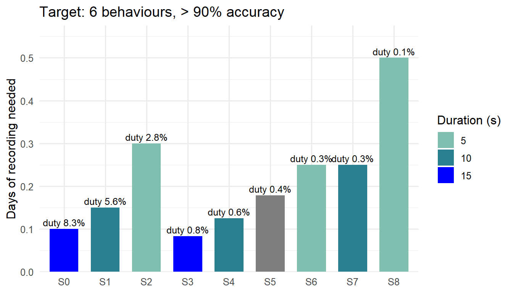

library(randomForest)
library(ggplot2)
library(dplyr)
library(tidyr)
library(knitr)
set.seed(1)
fs <- 25 # readings per second (Hz)
seg_len <- 1 # segment length (s)
n_samp <- fs * seg_lenAccelerometery settings (interval & duration)
Settings
Simulate behaviours
We create 12 fake behaviours that differ in movement speed (frequency) and strength (amplitude). Each segment is slightly different, as in real birds.
beh <- data.frame(
freq = c(0.5, 1, 2, 3, 4, 5, 6, 7, 8, 1.5, 3.5, 6.5),
amp = c(0.1, 0.3, 0.8, 0.5, 1.2, 0.7, 1.5, 0.9, 2.0, 0.5, 0.9, 1.2)
)
sim_seg <- function(freq, amp, noise = 0.3) {
f <- freq * runif(1, 0.9, 1.1)
a <- amp * runif(1, 0.7, 1.3)
t <- (0:(n_samp - 1)) / fs
ph <- runif(1, 0, 2 * pi)
cbind(x = a * sin(2 * pi * f * t + ph) + rnorm(n_samp, 0, noise),
y = .5 * a * sin(2 * pi * f * t + ph + 1) + rnorm(n_samp, 0, noise),
z = 1 + .3 * a * sin(2 * pi * 2 * f * t) + rnorm(n_samp, 0, noise))
}
# 3 simple numbers per axis: mean, variation (SD), main frequency
features <- function(m) unlist(lapply(1:3, function(i) {
v <- m[, i]
sp <- Mod(fft(v - mean(v)))[2:floor(n_samp / 2)]
c(mean(v), sd(v), which.max(sp) / seg_len)
}))
sim_data <- function(K, n_per) {
X <- do.call(rbind, lapply(1:K, function(k)
t(replicate(n_per, features(sim_seg(beh$freq[k], beh$amp[k]))))))
data.frame(X, y = factor(rep(1:K, each = n_per)))
}How much training data gives > 90% accuracy?
For 2 to 12 behaviours, we train the model with 5 to 200 segments per behaviour and test it on new data.
grid <- expand.grid(K = c(2, 4, 6, 8, 10, 12),
n_per = c(5, 10, 20, 30, 50, 100, 200))
grid$acc <- sapply(seq_len(nrow(grid)), function(i) {
mean(replicate(5, {
tr <- sim_data(grid$K[i], grid$n_per[i])
te <- sim_data(grid$K[i], 100)
mean(predict(randomForest(y ~ ., tr), te) == te$y)
}))
})ggplot(grid, aes(n_per, acc, colour = factor(K))) +
geom_hline(yintercept = 0.9, lty = 2, colour = "grey40") +
geom_line(linewidth = 0.9) + geom_point(size = 2) +
scale_x_log10(breaks = unique(grid$n_per)) +
scale_y_continuous(labels = scales::percent, limits = c(0, 1)) +
scale_colour_viridis_d(end = 0.85) +
labs(x = "Training segments per behaviour (log scale)",
y = "Accuracy", colour = "Number of\nbehaviours") +
theme_minimal(base_size = 12)
From this we take the smallest amount of data that reaches > 90% for each number of behaviours:
need <- grid |>
group_by(K) |>
summarise(n_per = if (any(acc >= 0.9)) min(n_per[acc >= 0.9]) else NA_real_) |>
mutate(sec_needed = K * n_per * seg_len, # total seconds of training ACC
samples_needed = sec_needed * fs) # total ACC samples
need |>
transmute(`Number of behaviours` = K,
`Segments per behaviour` = n_per,
`Total seconds required` = sec_needed,
`Total samples required` = samples_needed) |>
kable()| Number of behaviours | Segments per behaviour | Total seconds required | Total samples required |
|---|---|---|---|
| 2 | NA | NA | NA |
| 4 | 50 | 200 | 5000 |
| 6 | 10 | 60 | 1500 |
| 8 | 20 | 160 | 4000 |
| 10 | 200 | 2000 | 50000 |
| 12 | NA | NA | NA |
(NA = even 200 segments per behaviour did not reach 90%.)
Sampling scenarios
scen <- tribble(
~scenario, ~interval_s, ~duration_s, ~window_h,
"S0", 180, 15, 2,
"S1", 180, 10, 2,
"S2", 180, 5, 2,
"S3", 1800, 15, 24,
"S4", 1800, 10, 24,
"S5", 1800, 7, 24,
"S6", 1800, 5, 24,
"S7", 3600, 10, 24,
"S8", 3600, 5, 24
) |>
mutate(bursts_day = floor(window_h * 3600 / interval_s),
sec_day = bursts_day * duration_s, # ACC seconds collected per day
duty_cycle = duration_s / interval_s)Summary
Number of behaviours we want to classify:
target_K <- 6req <- need |> filter(K == target_K)
# most behaviours each scenario can reach (> 90%) in 1 or 7 days
max_beh <- function(sec_available) {
ok <- need |> filter(!is.na(sec_needed), sec_needed <= sec_available)
if (nrow(ok) == 0) 0 else max(ok$K)
}
summary_tab <- scen |>
rowwise() |>
mutate(days_needed = req$sec_needed / sec_day,
max_beh_1day = max_beh(sec_day),
max_beh_7days = max_beh(sec_day * 7)) |>
ungroup() |>
mutate(samples_needed = req$samples_needed)
summary_tab |>
transmute(Scenario = scenario,
`Interval (s)` = interval_s,
`Duration (s)` = duration_s,
`Recording window (h/day)` = window_h,
`ACC seconds per day` = sec_day,
`Days needed` = round(days_needed, 1),
`Max behaviours in 1 day` = max_beh_1day,
`Max behaviours in 7 days` = max_beh_7days,
`Duty cycle` = scales::percent(duty_cycle, accuracy = 0.1),
`ACC samples needed (> 90%)` = samples_needed) |>
kable(caption = paste0("Summary for ", target_K,
" behaviours. 'Days needed' = days of tag recording to collect the required training data (assuming all behaviours occur equally often)."))| Scenario | Interval (s) | Duration (s) | Recording window (h/day) | ACC seconds per day | Days needed | Max behaviours in 1 day | Max behaviours in 7 days | Duty cycle | ACC samples needed (> 90%) |
|---|---|---|---|---|---|---|---|---|---|
| S0 | 180 | 15 | 2 | 600 | 0.1 | 8 | 10 | 8.3% | 1500 |
| S1 | 180 | 10 | 2 | 400 | 0.1 | 8 | 10 | 5.6% | 1500 |
| S2 | 180 | 5 | 2 | 200 | 0.3 | 8 | 8 | 2.8% | 1500 |
| S3 | 1800 | 15 | 24 | 720 | 0.1 | 8 | 10 | 0.8% | 1500 |
| S4 | 1800 | 10 | 24 | 480 | 0.1 | 8 | 10 | 0.6% | 1500 |
| S5 | 1800 | 7 | 24 | 336 | 0.2 | 8 | 10 | 0.4% | 1500 |
| S6 | 1800 | 5 | 24 | 240 | 0.2 | 8 | 8 | 0.3% | 1500 |
| S7 | 3600 | 10 | 24 | 240 | 0.2 | 8 | 8 | 0.3% | 1500 |
| S8 | 3600 | 5 | 24 | 120 | 0.5 | 6 | 8 | 0.1% | 1500 |
ggplot(summary_tab, aes(scenario, days_needed, fill = factor(duration_s))) +
geom_col(width = 0.7) +
geom_text(aes(label = paste0("duty ", scales::percent(duty_cycle, accuracy = 0.1))),
vjust = -0.4, size = 3.3) +
scale_fill_manual(values = c("5" = "#7fbfb0", "10" = "#2a7f8f", "15" = "blue"),
name = "Duration (s)") +
scale_y_continuous(expand = expansion(mult = c(0, 0.15))) +
labs(x = NULL, y = "Days of recording needed",
title = paste("Target:", target_K, "behaviours, > 90% accuracy")) +
theme_minimal(base_size = 12)
Terminology
| Term | Meaning |
|---|---|
| ACC | Accelerometer data (movement of the bird, 3 axes: x, y, z). |
| Sampling rate (25 Hz) | The tag takes 25 ACC readings per second. |
| Duration | How many seconds the tag records ACC each time it switches on (e.g. 10 s). |
| Interval | Time between the start of two recordings (e.g. 180 s = every 3 min). |
| Recording window | How many hours per day the tag follows this schedule (e.g. 2 h, or the full 24 h). |
| Duty cycle | Share of the time the tag is recording = duration / interval (e.g. 10 s / 180 s = 5.6%). |
| Segment | A 1-second piece of ACC (25 readings). The classifier works on one segment at a time. |
| Number of behaviours | How many different behaviours you want the model to tell apart (e.g. 6). |
| Training data | Segments for which you know the behaviour (from video or observation). The model learns from them. |
| Accuracy | % of new segments that the model labels correctly. Our goal is > 90%. |
| Total seconds / samples required | Training data needed to reach > 90% accuracy. 1 second = 25 samples. |